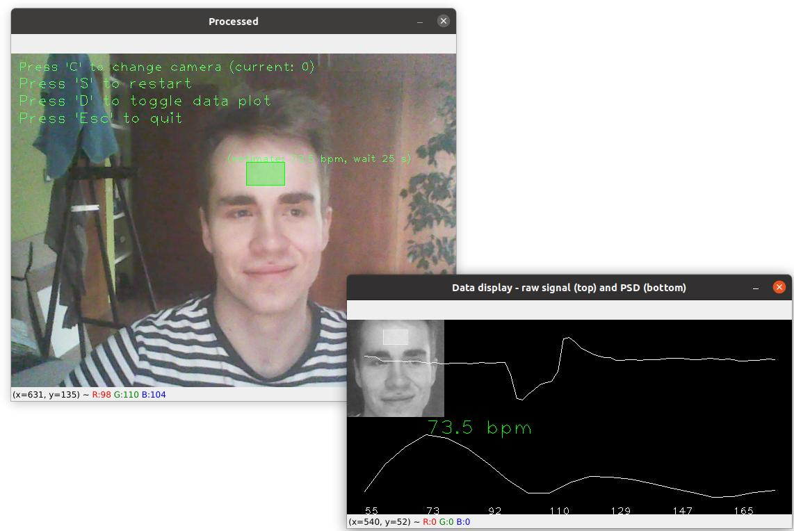
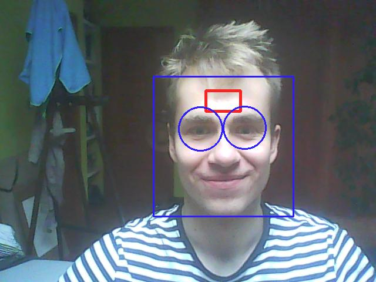

Heart rate webcam detector (pracovní název)
Projekt předmětu NI-CCC v zimním semestru 2020-2021
Autoři: Pavel Kříž, někdo další??
Nápad
Hlavní myšlenka, je ta, že by se dala vytvořit aplikace v Pythonu (ideální technologie), která by pomocí webové kamery snímala frekvenci srdečního tepu, případně i frekvenci dýchání. Na taková data by se však dobře dala navázat nějaká interaktivní vizualizace. Dala by se vytvořit i nějaká velkoprostorová vizualizace (SAGE), protože snímat tep jde takto i z více lidí najednou, s jediným problémem snižené přesnosti měření.
Nápady na vizualizaci
V jakých rozmezí se můžou vstupní hodnoty pohybovat (za minutu):
- Frekvence srdečního tepu: 60-90 (v klidu) a 90 - 160 (max 214) (při zátěži)
- Rozsah srdečního tepu u atletů: 40-214
- Dechová frekvence: 16-20 (v klidu)
Cílem projektu je detekovat hlavně tepovou frekvenci a tu dechovou jen pokud to bude možné. Pro vizualizaci je tedy dobré očekávat jako vstup hlavně jednu hodnotu co se bude pravděpodobně pohybovat někdy mezi 60-160. Ideálně bude možné detekovat tepovou frekvenci více uživatelům najednou (pokud to rozumně půjde).
Jelikož jsou hodnoty celkem vysoké, tak by se dala vizualizace vytvořit v nějakém měřítku k tepu, nebo by se to muselo vymyslet tak aby nevypadala úplně jako stroboskop.
Existující řešení detekce tepu
webcam-pulse-detector
Níže je vidět toto řešení v běhu. V tu chvíli mi to ukazovalo srdeční puls celkem přesně. Porovnával jsem totiž hodnoty s fitness náramkem na ruce (ten není stoprocentně přesný ale minimálně orientačně ano). Je ale nutné říct, že hodnoty často skákali někam úplně jinam. Například tedy ze 70 hned na 50 a pak hned na 100. To však může být způsobeno nekvalitní kamerou a jejím šumem.
Další řešení
Předchozí řešení je psané v Pythonu, což má své velké výhody. Nicméně existuje i řešení psané v JavaScriptu, jehož výhoda zpočívá ve snadném zpřístupnění na internetu. To ale nebylo vyzkoušeno.
Jiné řešení co jsem našel na videu je zajímavé tím, že využívá tváří jako čtecích ploch srdečního tepu. To řešní ale nebylo ozkoušeno.

Plán
Cílem je vytvořit aplikaci ve dvou fázích
- 1. Aplikace detekuje obličej
- 2. Aplikace detekuje tepovou frekvenci
- 2b. Aplikace detekuje tepovou i při změně polohy uživatele
- 2c. Aplikace detekuje tepovou frekvenci více uživatelům najednou
- 2d. (případně) Aplikace detekuje dechovou frekvenci
- 3.Vytvoření vizualizace vhodné pro vytvořená data
- 4. Napojení vizualizace na detekční aplikaci
Rozpracování
Momentálně byla vytvořena aplikace detekující obličeje a oči(modře) a nacházející zónu měření (červeně). Na obrázku je vidět příprava na plochu měření srdečního tepu, která je shodující s tou z existujícího měření. To lze měřit však ze všech dalších ploch větších ploch pokrytých pouze kůží (například tváří).
